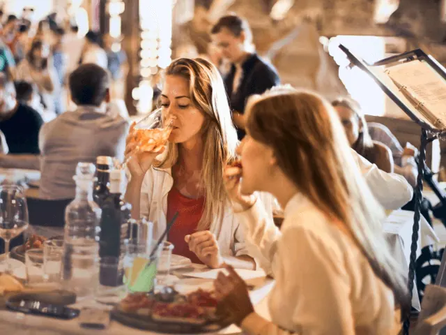
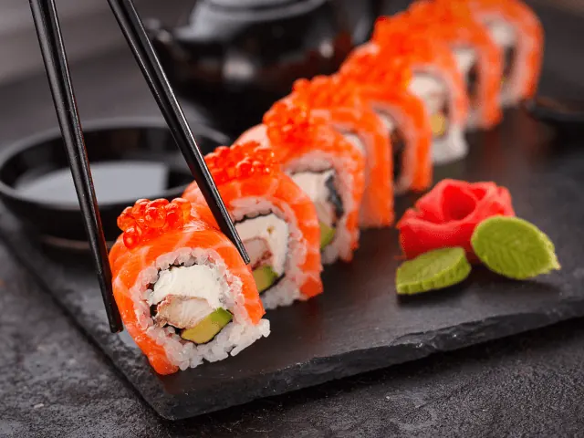

De 10 Beste Restaurants in Nijmegen Centrum
Gepubliceerd op 11 oktober 2023, bijgewerkt op 31 oktober 2023
Onderdeel van de gids Restaurants in Nijmegen

Restaurants in Nijmegen Centrum
In Nijmegen, de oudste stad van Nederland, schuilt een gastronomische schat die even divers is als zijn rijke geschiedenis. Deze bruisende stad aan de oevers van de Waal biedt een scala aan culinaire ervaringen die de harten van zowel fijnproevers als casual diners zullen veroveren. Of je nu zin hebt in een luxueus diner onder het zachte licht van kroonluchters, een snelle maar smakelijke budgetmaaltijd, of een speciaal feestmaal om een bijzondere gelegenheid te vieren, Nijmegen biedt een reeks opties die zowel je smaakpapillen als je portemonnee zullen behagen. Van romantische dineetjes tot budgetvriendelijke maaltijden en speciale gelegenheden, hier is een lijst van de 10 beste restaurants in het centrum van Nijmegen:
Romantische Avonden in een restaurant in het centrum van Nijmegen
Restaurant Flores: Intimiteit en Europese Haute Cuisine
Als het om romantiek gaat, weet Restaurant Flores de perfecte balans te vinden tussen intieme gezelligheid en culinaire verfijning. Genesteld in een charmant, historisch gebouw, biedt het restaurant een sfeervolle ambiance die ideaal is voor intieme diners. Bij Flores draait alles om de fijne kneepjes van de Europese haute cuisine. Het menu is een samensmelting van smaken uit verschillende Europese landen, maar altijd met een focus op technische perfectie en artistieke presentatie. Denk aan een zacht gegaarde zalm met een zijkant van truffelrisotto of een perfect bereid stuk rundvlees vergezeld van een rijke rode wijnsaus. De ervaring wordt aangevuld met een zorgvuldig geselecteerde wijnkaart en attente service, waardoor Restaurant Flores een ideale keuze is voor die speciale avond met je geliefde.

Budgetvriendelijke restaurants in het centrum van Nijmegen
Restaurant Vief: Betaalbare Luxe en Huiselijke Sfeer
Restaurant Vief is een charmante eetgelegenheid die de warmte en gezelligheid van thuis naar de eettafel brengt. Bekend om zijn huisgemaakte gerechten die met zorg en liefde zijn bereid, is dit restaurant een toevluchtsoord voor degenen die op zoek zijn naar kwaliteit tegen een betaalbare prijs. De inrichting is ongedwongen en nodigt uit tot ontspanning, met comfortabele stoelen en gezellige verlichting die bijdragen aan de algehele gemoedelijke sfeer. Het menu is veelzijdig, met een scala aan opties die variëren van comfort food tot meer verfijnde schotels. Met prijzen die je portemonnee niet zullen schaden, is Restaurant Vief een uitstekende optie voor een gezellig diner of een informele lunch met vrienden en familie.
Smaakrijk Lunch & Zo: De Plek voor een Snelle en Smaakvolle Lunch
Voor degenen die een snelle, maar kwalitatieve lunch willen, is Smaakrijk Lunch & Zo de ideale keuze. Deze gezellige lunchplek is ideaal voor zowel locals als bezoekers die een snelle en smakelijke maaltijd willen genieten zonder te veel te besteden. De menukaart is simpel maar doeltreffend, met een ruime keuze aan versbereide broodjes, salades en soepen die voldoen aan een verscheidenheid aan smaakprofielen. De sfeer is uitnodigend en informeel, waardoor het een uitstekende plek is om even op adem te komen tijdens een drukke dag. Het vriendelijke personeel en de snelle service maken de ervaring compleet, zodat je weer helemaal opgeladen bent voor de rest van je dag.

Restaurants in het centrum van Nijmegen voor speciale aangelegenheden
Restaurant Vesters: Een Sterrenwaardige Belevenis
Als je op zoek bent naar de crème de la crème van de gastronomische wereld in Nijmegen, dan is Restaurant Vesters de plek bij uitstek. Met een Michelin-ster op zijn naam biedt dit restaurant meer dan alleen een maaltijd; het biedt een compleet gastronomisch avontuur. Elk gerecht is een kunstwerk op zich, samengesteld uit de meest verse, hoogwaardige ingrediënten en gepresenteerd met een flair die de visuele zintuigen prikkelt voordat het je smaakpapillen raakt. De wijnkaart is al even indrukwekkend, met een selectie die zorgvuldig is samengesteld om elke gang aan te vullen. Het interieur is verfijnd en de service is onberispelijk, waardoor Restaurant Vesters een onovertroffen setting biedt voor de meest speciale gelegenheden.
De Nieuwe Winkel: Creativiteit en Moderniteit
Voor diegenen die op zoek zijn naar iets anders dan de traditionele gastronomie, biedt De Nieuwe Winkel een boeiend alternatief. Dit restaurant staat bekend om zijn experimentele benadering van de keuken, waarbij klassieke technieken worden gecombineerd met moderne innovaties om verrassende en onvergetelijke gerechten te creëren. Het interieur is eveneens modern, maar behoudt een gevoel van warmte en uitnodiging die bijdraagt aan de totale ervaring. Of je nu geniet van een verrassingsmenu of kiest uit de à-la-cartegerechten, elk bezoek aan De Nieuwe Winkel is een reis door het onbekende en het opwindende. De innovatieve aanpak en het stijlvolle decor maken het tot een ideale keuze voor speciale gelegenheden waar je indruk wilt maken en zelf geïnspireerd wilt raken.

Vegetarische en Veganistische restaurants in het centrum van Nijmegen
Tati: Creativiteit op het Menu
Voor diegenen die op zoek zijn naar een unieke, plantaardige eetervaring, is Tati een must-visit. Dit hippe restaurant heeft een uitgebreid menu met zowel vegetarische als veganistische opties die verre van saai zijn. Elk gerecht is een explosie van kleuren, smaken en texturen, en gemaakt met biologische en lokaal geproduceerde ingrediënten waar mogelijk. Of je nu kiest voor een van hun innovatieve hoofdgerechten of geniet van een selectie uit hun assortiment kleine gerechtjes, je zult zeker geïnspireerd worden door hun creatieve benadering van plantaardig eten. De sfeer is net zo modern als het menu, met een eigentijds design dat de creatieve geest van de plek weerspiegelt.

Allround restaurants in het centrum van Nijmegen
De Bruin – Lunchen op de Markt: Lekker eten en Veelzijdigheid
Midden in het kloppende hart van Nijmegen vind je De Bruin – lunchen op de markt. Dit restaurant staat bekend om zijn veelzijdige menu dat vleeseters, visliefhebbers en vegetariërs zal aanspreken. Het decor is elegant maar niet pretentieus, waardoor je je meteen welkom voelt. Of je nu kiest voor een verfijnde salade, een smaakvolle pasta of een klassieke vlees- of visgerecht, elk item op het menu is bereid met aandacht voor detail en kwaliteit. De sfeer is levendig en gastvrij, ideaal voor zowel zakelijke lunches als gezellige bijeenkomsten met vrienden en familie.
Wally – Burgers & Beer: Voor de Liefhebbers van het Goede Leven
Als je zin hebt in een meer informele setting zonder in te boeten aan smaak en keuzemogelijkheden, dan is Wally – Burgers & Beer de plek voor jou. Dit restaurant biedt een scala aan sappige hamburgers gemaakt van kwaliteitsvlees, maar heeft ook vegetarische en zelfs veganistische opties. Om de ervaring compleet te maken, kun je kiezen uit een breed scala aan bieren, zowel lokaal als internationaal. Het restaurant heeft een levendige, bijna feestelijke sfeer en het personeel is vriendelijk en efficiënt, wat bijdraagt aan de algehele positieve ervaring.